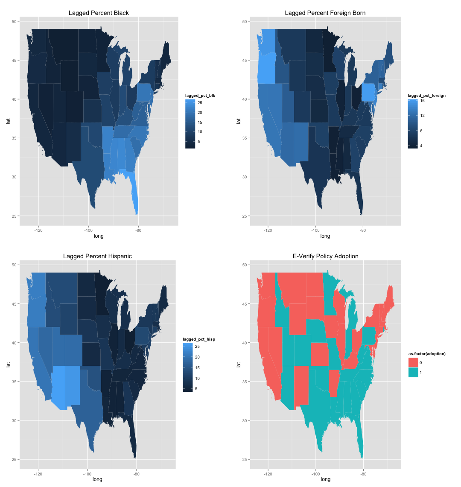
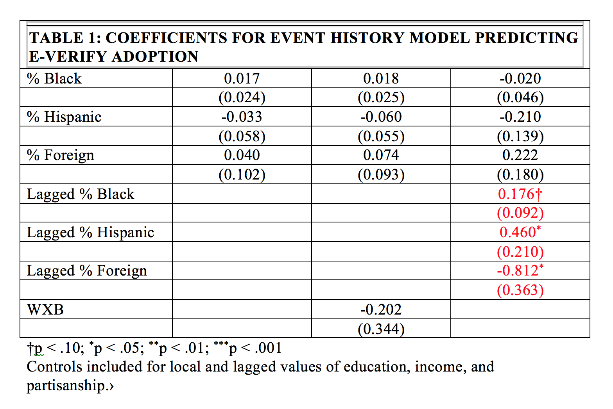

Safer Streets for Whom?
Examining the Role of Deferential Social Control in the Gentrification-Crime Relationship
Chris E. Rees
Doctoral Student in Sociology, SUNY-Albany
Research Scientist, Center for Human Service Research
Overview of Gentrification
WHAT is E-Verify?
- 1996 Illegal Immigration Reform and Immigrant Responsibility Act
- Births variety of employment verification systems
- Basic Pilot Program
- Expanded by Bush taken over by DHS
- States began to adopt it in 2006
Theory and Literature
HOW can we explain policy adoption?
- Social Disorganization/Social Control
- Routine Activites
- Increased Public Surveillance
WHAT has been found in the literature?
- No evidence of spatial diffusion
- Some evidence for racial threat
- Focus on threatening populations increase
WHAT is missing from the literature?
- Understanding of what lies between gentrification and crime
- Immigration is by nature the spatial diffusion of people
- Need for an analysis that takes into account spatial arrangements
SPATIAL CONTEXT & ADOPTION

Data and Methods
WHAT were the sources of data?
- Level of Measurment
- Sub-Burough
- Sources of Data
- NYPD's Stop, Question, and Frisk (SQF) Data
- NYPD's Crime Data
- Decenial and ACS Census Data
- Measurement
- Freeman's census based measurement of gentrification
- Sampson's operationalization of concentrated disadvantage
- Controls for nativity and residential turnover
- Estimation
- Fixed Effects
SPATIAL OVERVIEW
Results
WHAT I found?
- No significant local racial threat effects
- No evidence for spatial diffusion of the policy itself
- Significant spatially lagged racial threat effects
FINDINGS

Future Directions and Conclusions
WHAT comes next?
- Theorizing spatially
- Incorporating cultural measures of gentrification
- Testing this in other cases of policy diffusion
Thank You!
chriscerees@albany.edu
webhttp://www.albany.edu/chsr/
slideshttp://cerees.github.io/gentrification_and_social_control_slides